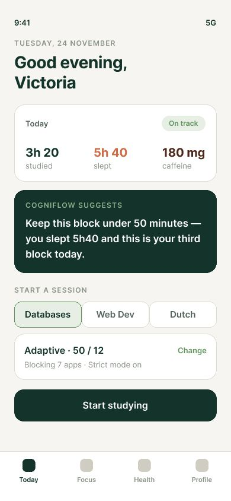
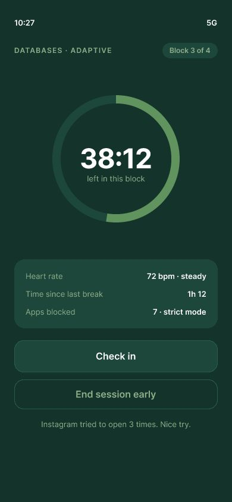
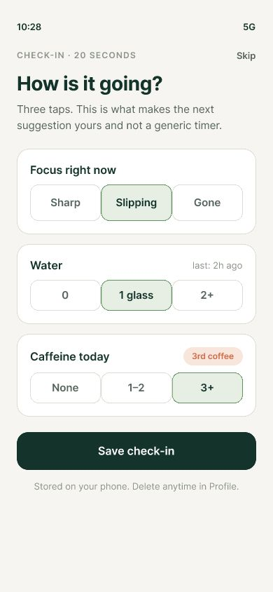

A break when it makes sense
The concept uses a short check-in to help you reflect on your focus and energy. A suggestion could mean pausing, getting water or adjusting your next study block. You would choose what to follow.
Long study sessions can make it easy to forget yourself. Cogniflow brings study sessions and well-being check-ins together, so there’s room for water, movement and a proper break.
Help us shape CogniflowWe’re testing the idea with students. The app is still in development.
Three screens from our prototype. All numbers and personal details shown are sample data.

See your study time and habits together.

A session with room to pause or finish early.

Notice how you’re doing before carrying on.
Scroll sideways to view all three screens.
The concept uses a short check-in to help you reflect on your focus and energy. A suggestion could mean pausing, getting water or adjusting your next study block. You would choose what to follow.
Sleep and caffeine entries sit beside your study sessions in the prototype. The aim is to make your own routine easier to understand, without turning a long day at your desk into a score.
The first concept uses manual entries. You would be able to record how you feel without owning extra equipment. Health-app connections are an option to explore later.
Check-ins and reminders are intended to be optional, with clear controls over what you share. We are testing these ideas in a prototype, not offering a medical service or promising better grades.
We’re looking for higher-education students aged 18 or over to give feedback on the idea and our Figma prototype.
Leave your email if you’d like the team to contact you about student testing. You’re joining a research list, not buying a subscription.
No smartwatch needed. No health records requested.
We currently have a Figma prototype and are testing the concept. Joining the list lets us contact you about feedback sessions. It does not create an app account or guarantee a launch date.
Joining the research list is free. We’re exploring a free basic version and an optional premium version with longer-term comparisons and more personalisation. EUR 40 per year is a proposed premium price we still need to test. There is nothing to buy on this page.
No. This registration asks only for your email and an optional programme or study year. Prototype feedback can use fictional examples. We don’t ask for wearable exports, medical records or health-app access here.
No. Cogniflow explores everyday study habits and well-being support. It is not a medical service, and we haven’t established improvements in health, concentration or grades.